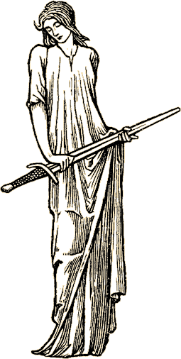

|
|||||||||||||||||||||||||||||||||||||||||||||||||||||||||||||||||||||||||||||
| Game | OS | IE 5+ | NS 7 | Firefox |
|---|---|---|---|---|
| Marrach or Lovecraft | Win | Yes | Yes | Yes |
| Marrach or Lovecraft | Mac | No | Maybe | Yes |
| Grendel's Revenge | Win | Yes | No | No |
| Grendel's Revenge | Mac | Not Available | ||
| The Eternal City | Win | Yes | Yes | Yes |
| The Eternal City | Mac | Maybe | Maybe | Maybe |
Strategy Games. Our strategy games work on all stable, modern browsers. This generally means IE 5+, Netscape 7, or a stable Mozilla (1.0 or 1.4 or preferably Firefox).
Q: What do I do if I forget my password?
A: Visit our lost password page and input your account name and registered email address.
Q: What do I do if I forget my account name?
A: Send an email to ce@skotos.net and list the email address and full name registered with your account.
Q: What do I do if I'm having lag problems?
A: Lag is generally caused by some computer on the Internet getting overloaded. This can be a machine owned by your ISP, a machine owned by our ISP, or some machine that happens to be routing packets between the two of us. Routing paths are different for different people, and thus lag will usually appear different for different folks.
It's generally helpful to report repetitive lag to us. If you're using a Windows machine you can go to a MS-DOS shell and type "tracert www.skotos.net". This must be done precisely when you are experiencing the lag, and it's helpful to do it a few times, as most lag is intermittent. When you've done that, send the results to ce@skotos.net.
We may or may not be able to offer a solution. If there's a problem with our machine or our ISP we'll be able to fix it. If it's a problem with your ISP, we'll be able to identify the problem precisely so that you can discuss it with them. However, if it's an arbitrary machine on the Internet which happens to be routing packets slowly, it usually takes longer to resolve the problem, because that machine is owned by a company that neither we nor you have contracts with. We can only identify the problem to them and hope they'll resolve it.
In general, lag is a problem everywhere on the Internet. You might feel it a little more at Skotos because you're engaging in more interactive back-and-forth than you would when surfing web pages. However, we also try to work that much harder to reduce lag for our customers in the situations where we actually have control over it.
Billing Issues
Q: How much does it cost to play?
A: Your first month of play at Skotos is free. After that you can subscribe on a monthly, quarterly, or yearly basis, as you prefer. A single account gives you access to all 11 of the basic Skotos games.
Using a credit card (American Express, Visa, or Mastercard), you can subscribe monthly for $12.95 USD, quarterly for $34.95 USD, or yearly for $129.95USD.
If you wish to pay by check or money order you can purchase a year's subscription (12 months) at a discounted rate for $129.95 USD or else a quarterly (3 month) payment for $34.95 USD. Please do not send a check or money order for a single month's payment. Please note that it seems to take about a week for a check or money order to get to us, so you should be sure to send well in advance of your next payment date.
| Payment Plan | Method of Payment | Amount | Savings per Month |
| Monthly | Credit/Debit Card Only | $12.95 USD | None – Base Rate |
| Quarterly | Check/Money Order/Credit/Debit | $34.95/quarter | $1.30/month, $15.60/year |
| Yearly | Check/Money Order/Credit/Debit | $129.95/year | $2.12/month, $25.45/year |
You can also sign up for a premium account if you so wish.
Q: Are any taxes charged?
A: No.
Q: What do I get for my money?
A: An account with Skotos entitles you to basic access to an entire channel of games.
Q: What if I only want to play one game?
A: We offer a subscription to our entire game service for the same price that other online companies charge for access to a single game. If you just play one game, we believe you'll be getting your money's worth. If you find that you enjoy multiple Skotos games, we're very happy to offer that to you as a free bonus.
Q: How do renewals work?
A: Your credit card will be charged each billing cycle (monthly, quarterly, or yearly) if that is your chosen method of payment. To cancel your account and stop renewals, simply choose "Cancel Skotos Account" from the Account Overview page.
Customers who pay by check will not be automatically renewed and must send us a new check to cover the following year before their billing cycle is up. You'll get a helpful warning in your account overview page when this time is drawing near.
Q: What is the Skotos refund policy?
A: Skotos offers no refunds for its services. Payment is for either a month, a quarter, or a year, in advance, and cancellation before the pre-paid time period is up does not entitle the customer to a refund.
Q: How is my monthly, quarterly, or yearly billing cycle calculated?
A: You'll never be charged before your trial period is up. We'll start charging you either on the first day following the end of your trial period, or on the day you decide to enter your credit card, whichever occurs later. After that we'll charge you each month on the same day, each quarter on the same day, or each year on the same day, depending on which billing period you decide. Each payment is a pre-payment for the following month, quarter, or year.
Your account will be disabled if your billing period ends without a new payment. However, we'll save your account and characters for at least a six-month grace period, so that you'll be able to come back and continue playing your old characters if you renew your account within that period.
Q: Does Skotos offer any Internet-based payment services, like PayPal?
A: Yes. You'll see Paypal as an option on your billing page.
Q: Who should I make my check out to?
A: Checks and money orders can be sent to:
Subscriptions
Skotos Tech Inc.
2342 Shattuck Avenue, #512
Berkeley, CA 94704-1517
Checks should be made out to "Skotos Tech Inc."
Checks or money orders must be for quarterly or yearly payment, in advance, U.S. dollars only. Please include real name, account name, and email address with any check or money order payment.
Q: Does Skotos accept payment in any currency other than U.S. dollars?
A: No, Skotos does not accept payment in anything but US dollars. Most credit card companies, however, will make the appropriate translation between US dollars and your local currency when a charge is made. For checks and money orders, we only accept US funds at this time.
Q: What if I don't have a credit card and can't afford to pay in advance?
A: We can actually take any payment made via a card with the Visa or Mastercard logo on it. This includes not just credit cards, but also some debit cards and some stored-value cards.
Most major banks now put Visa or MasterCard symbols on their debit (ATM) cards. If you've already got one of these, you can use it to pay for your subscription. If you don't have a Mastercard or Visa branded debit card, you should call up your bank and see if you can upgrade your card.
As long as your bank/credit card is accepted anywhere that Mastercard or Visa is, you'll be able to use it.
Q: How do I cancel my account?
A: If you have entered a credit card, login by clicking the "Play Now" button of your favorite game, then choose "Cancel Account" from the Account Overview page. This will remove all of your credit card information, and you will never be charged again — unless you decide to resubmit credit card information at a later time. You may continue playing until your current month (or quarter or year) ends with no obligation.
If you have not entered a credit card, your account will automatically expire at the end of its trial period. You may play until then with no obligation. If you wish to ensure that you don't receive mail from us in the future, you should choose the "Delete Game" option and click the "No, you may not contact me via email." button. Otherwise we may alert you when new games are released at the Skotos site which may be more to your interest.
If you paid with a yearly check or money order, your account will similarly expire automatically at the end of its current billing period.
Skotos Support
Q: How can I get support from Skotos if there's a problem?
A: For TOS violations, billing issues, harassment complaints, and other out-of-character concerns — for any Skotos games — you should contact the Customer Experience staff directly by emailing ce@skotos.net.
For billing questions of an urgent nature only, you may also call us at 510-647-2770.
If you have a in-game question regarding a specific Skotos game, we suggest you first:
- Read the Player's Guide for the game you're playing; it's linked from the Overview page for the game.
- Seek help in-game using the "assist" command ("@proclaim" in The Eternal City).
If that is insufficient, you should send an email to the team running the game:
| Castle Marrach | ce@skotos.net |
| The Eternal City | tec-support@skotos.net |
| Galactic Emperor: Hegemony | ce@skotos.net |
| Grendel's Revenge | support@worlds-apart.com |
Q: How fast will you respond?
A: For email, we promise a 2-business-day reply period, and do our best to respond within 1. For critical problems (machine/game down) we'll fix the problem as soon as we're aware of it, 24x7--and we usually find out fairly quickly due to sophisticated monitoring programs. Watch the forums for updates in this sort of situation.
Please do your best to include very useful Subject headers in your mail, preferably including the name of the game your playing. This will help us diagnose problems faster, and also helps your mail stand out from the piles of spam we unfortunately receive.
Our business partners may have slightly different policies than Skotos itself, but generally response is 1-2 business-days there too.
Q: What do I do if someone harasses me?
A: If someone is continuing to harass you, use the "assist" command or send email to ce@skotos.net. Be sure to include your real name, your player name, and details on where and when the incident took place. If you have any logs of the incident, include those in email.
Q: I see your games are rated 15+. What does that mean?
A: In order to enrich your gaming experience and to comply with Federal law, we have structured our games for players aged fifteen and over.
Q: What is your privacy policy?
A: Our complete Privacy Policy is available online.
Community Support
Q: How can the community help support Skotos?
A: We appreciate your interest in the games that we're creating at Skotos which concentrate on telling stories, developing characters, and interacting with other real people. As soon as you become a subscriber to Skotos you are helping to support this community, allowing us to continue expanding our current games and to continue building new ones. Thank you!
We also offer players who feel able to give additional support to the community the ability to do so through two methods: mentoring new users and purchasing premium accounts.
Q: How do I mentor new users?
A: Most players join the Skotos community after hearing about it from a friend. We thus try to reward and encourage current players bringing new members into the fold. You will receive StoryPoints if you refer someone to the game or if you mentor someone in-game, encouraging them to stay past their trial period.
Your personal StoryPoints page contains information on your current StoryPoint total and how to create a referral link. This will automatically grant you StoryPoints if someone you refer joins the Skotos community, and more if they stick around. If you mentor someone in-game, you should tell them your account name or registered email address, so that they'll be able to give you StoryPoints when they become a registered user.
The link to StoryPoints on your overview page will be marked with an asterick whenever someone awards you points. Currently you gain 1 point for referring a user, 20 points for referring a user who becomes a paying subscribers, and 50 points for mentoring a user who becomes a paying subscriber.
Q: What's a premium account?
A: If you wish to provide additional support for Skotos, or or if you want to gain access to some additional benefits, you can sign up for a premium account at Skotos. If you choose not to sign up now, you can upgrade your account at any time. Simply visit the overview page, and choose "View Billing Info". Choose a "premium" account rather than "regular".
Using American Express, Visa, or Mastercard, you can signup for a premium monthly for $29.95 USD, quarterly for $79.95 USD, or yearly for $299.95 USD.
If you wish to pay by check or money order you can purchase a year's premium subscription (12 months) in advance at a discounted rate: $299.95 USD for 1 year. A summary of these rates can be found below.
| Payment Plan | Method of Payment | Amount | Savings per Month |
| Monthly | Credit/Debit Card Only | $29.95 USD | None – Base Rate |
| Quarterly | Credit/Debit Card Only | $79.95/quarter | $3.30/month, $39.60/year |
| Yearly | Check/Money Order/Credit/Debit | $299.95/year | $4.95/month, $59.45/year |
Q: What are the benefits of a premium account?
A: You don't need anything in a premium account to be able to enjoy all of the current Skotos games to their fullest potential. However, if you are a serious Skotos player for whom Skotos games are your prime source of entertainment, the premium account will offer some benefits that will enhance your gaming experience.
Please see the What is Skotos Premium? page for info on all of the current benefits. Currently the Skotos premium program benefits include: access to dynamic web pages (my.skotos.net), Skotos email (webmail.skotos.net), early beta-testing privileges on many games, game-specific benefits for TEC, Grendel's Revenge, Castle Marrach, and GE: Hegemony, and 50 bonus Story Points a month.
Q: What can I do with StoryPoints?
A: StoryPoints allow you to purchase merchandise, request descriptive changes or unique items in various games, play CNPCs in certain games (such as gladiators in TEC and humans in Grendel's Revenge), and get a leg-up for brand new characters.
The What is Skotos Premium? page has a fairly complete listing of StoryPoint benefits. Some benefits requiring administrative support are limited to premium subscribers, while many are available to all Skotos subscribers, and thus may be purchased with either StoryPoints gained from premium accounts or from mentoring new players.
Whichever way you choose to help support Skotos, we want to make sure we can say, "Thank You!"
Our Technology
Q: What technology does Skotos use?
A: The in-house Skotos games (Castle Marrach, Lovecraft Country, Mortalis Victus, and several upcoming projects) are built on DGD, a robust server platform that has been used for numerous chat services, including the popular Yahoo! chat.
We've build a brand-new MUD library on top of DGD that includes some features that were impossible ten years ago, when the last generation of text-dominant games was being written. These features include: an expansive parser featuring more than 1,200 verbs, 2,500 adverbs, and most pronouns and prepositions; a proximity system that creates physical relationships between people and things; layered levels of detail in descriptions; and persistent worlds where players can have real and permanent effects.
Q: Will you be using the same engine for all your games?
A: All of the roleplaying games created at Skotos Tech will be built on DGD, will run using the StoryBuilder Server, and will be editable with the same StoryBuilder Toolkit. However, that's not to say that all of our games will be the same. Different games will use different World libraries which feature specific systems appropriate to the game — such as dueling for Castle Marrach, insanity for Lovecraft Country, and voting for Galactic Emperor: Succession. World libraries will also be available to external StoryBuilders, allowing them to access systems appropriate for the games that they're creating.
Grendel's Revenge and The Eternal City were both built by Worlds Apart on their own Cold-based game engine. Each of our graphical and strategy games as their own core game engine. We may license other games in the future that do not use the DGD engine.
Q: How many players can be on your server at one time?
A: Thousands. DGD is very stable. Every once in a while we hit a plateau, but there is still lots of room for optimization and we haven't hit the upper limit yet.